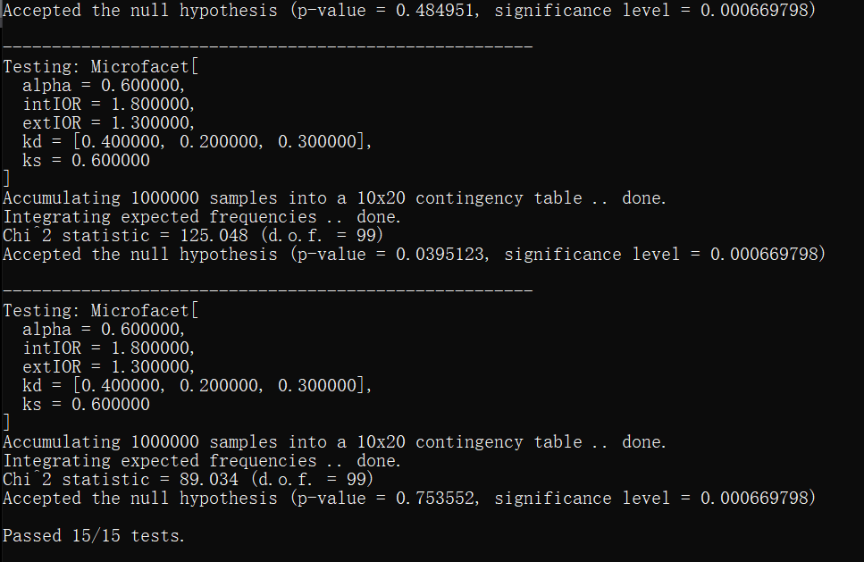
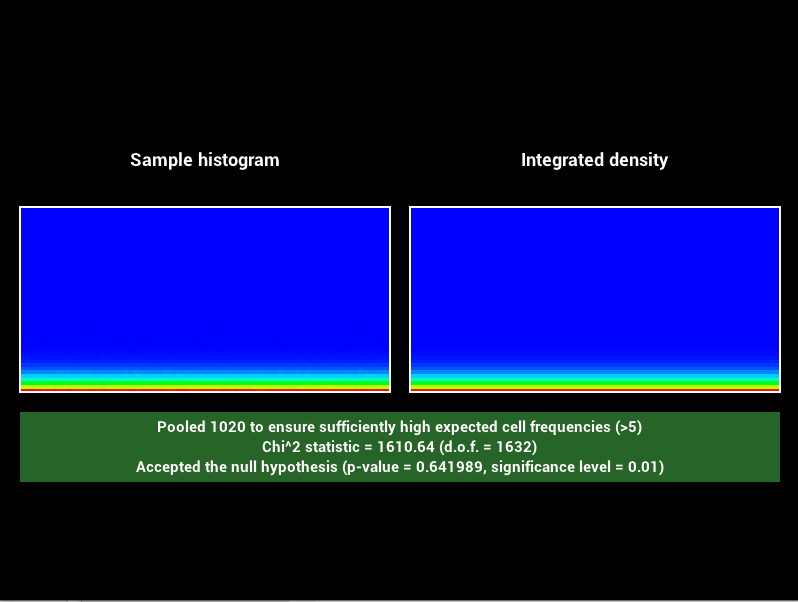
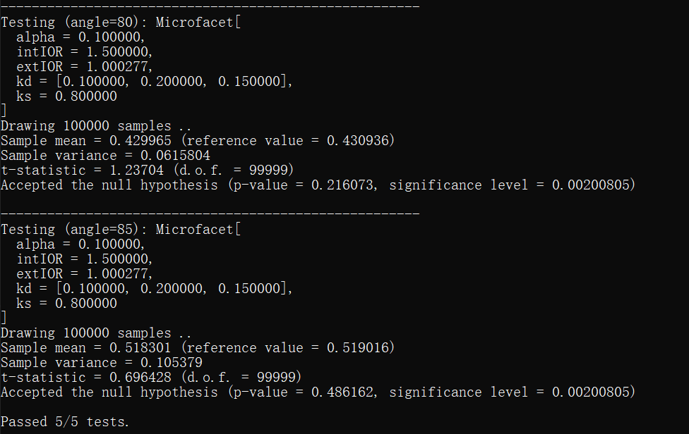
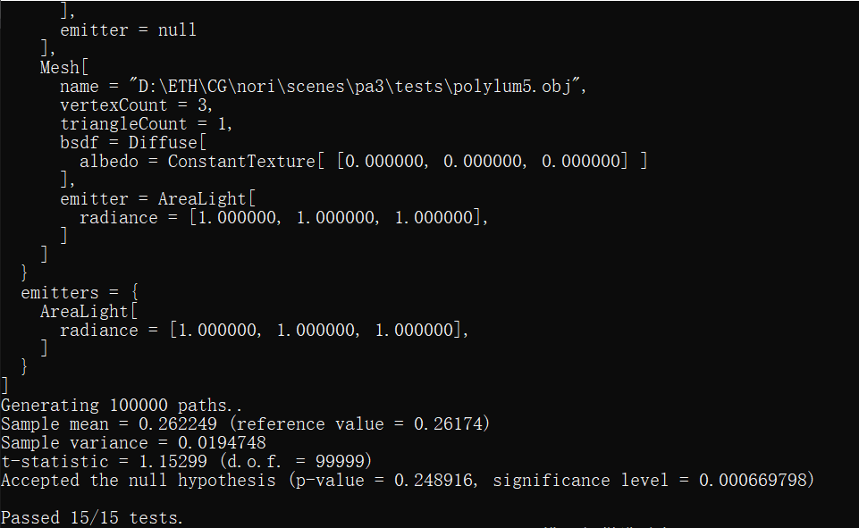
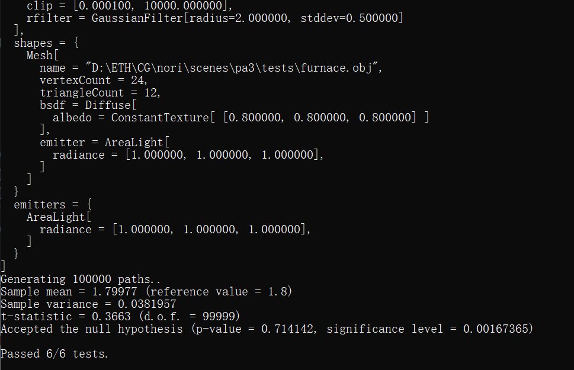

Part 1: Light Sampling
The modified files are arealight.cpp and direct_ems.cpp. This task took about three days.
Integrator Implementation
The implementation of direct_ems.cpp is similar to direct.cpp except that this time we have to check that whether the first intersection point is part of an emitter itself. If so, we need to add its radiance to the final result.
Shape Area Light
Implementing pdf() in arealight.cpp is tricky. It has to be able to calculate the pdf independently from sample(). In addition, the result should be converted to solid angle form by multiplying with squared distance between the first and second intersection points then divided by the cosine between incident ray and normal. $$p_\Omega(\overrightarrow{\omega})=p_A(x)\frac{d^2}{cos\theta}$$
Validation
We passed the first five tests in test-mesh.xml and the first two tests in test-mesh-furnace.xml. The renderred images look similar to the reference images except for some small errors due to the stochastic nature of Monte-Carlo integration.
Part 2: BRDF Sampling
We have to multiply the BSDF with the cosine of incidence ray and normal in microfacet.cpp. Doing this in direct_mats.cpp will fail the t-test.The files modified are microfacet.cpp and direct_mats.cpp. This is the hardest task and it took five days to complete.
Integrator Implementation
Since we are sampling from the BSDF perspective, we don't have to iterate through all emitters. Instead, we use the BSDF to sample the incident ray (which is the outgoing ray in BSDF). If this ray intersects with an emitter, we can calculate its radiance. We also need to check whether the first intersection is part of an emitter as in part1. A different EmitterQueryRecord should be used to distinguish from the one used for the second intersection.
Microfacet BRDF
The implementation of eval() and pdf() is straightforward as we just need to call various methods that are already implemented. As for sample(), we used the x component of the 'sample' parameter as a random variable and compare it with the value of ks to decide which lobe to choose. Then we use the trick introduced in the lecture to rescale x back to the interval [0,1].
Validation
We passed the second set of five tests in test-mesh.xml and the second set of two tests in test-mesh-furnace.xml. We also passed the t-test and chi2test. The renderred images look similar to the reference images except for some small errors due to the stochastic nature of Monte-Carlo integration.




Part 3: Multiple Importance Sampling
After finishing part1 and part2, this part is just combining the two parts. The file modified is direct_mis.cpp and it took less than one day to complete the task.
Integrator Implementation
Since now we are combining two approaches, it is a good habit to rename some of the variables like EmitterQueryRecord and BSDFQueryRecord with ems and mats contexts. For each approach, we need to calculate the pdf from emitter and BSDF. We also have to check that the sum of the two pdfs is greater than zero before calculating the weight.
Validation
We passed the last five tests in test-mesh.xml and the last two tests in test-mesh-furnace.xml. The renderred images look similar to the reference images except for some small errors due to the stochastic nature of Monte-Carlo integration.

Image Validation
TODO: Show a 4-way comparison for each of the 2 scenes in your report. For each scene compare your 3 integrators (direct_ems, direct_mats, direct_mis) with the reference MIS rendering.